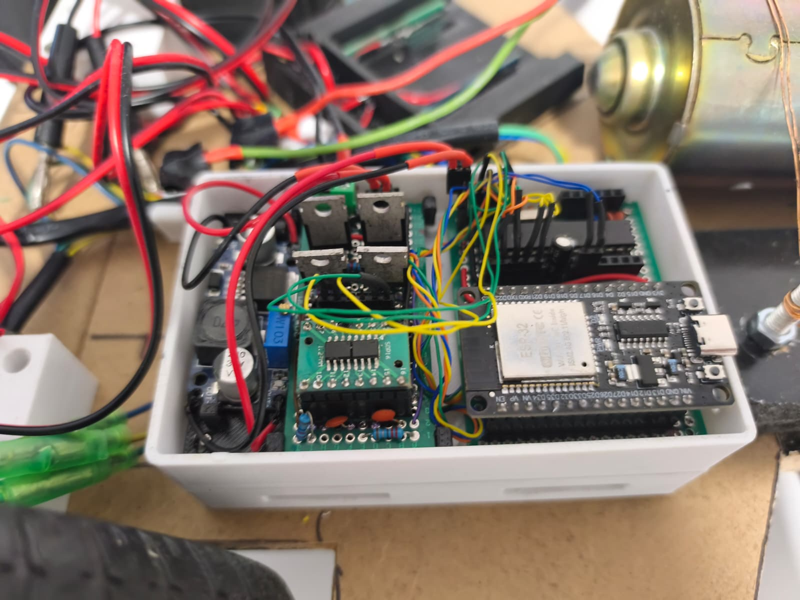

Basic Control
This uses a receiver ESP32 to process and receive the packages comming from the controller and AI simply maps the wireless inputs to the Arduino and motor drivers, MAde this way to simplify the processes and keep them in blocks.
Object Recognition
The Raspberri Controls the camera Inputs, Classifiers and Object analysis algorithms using OpenCV and sends directives to the ESP32 These primitive directives are pre-processed but kept as a minimum to ensure speed.